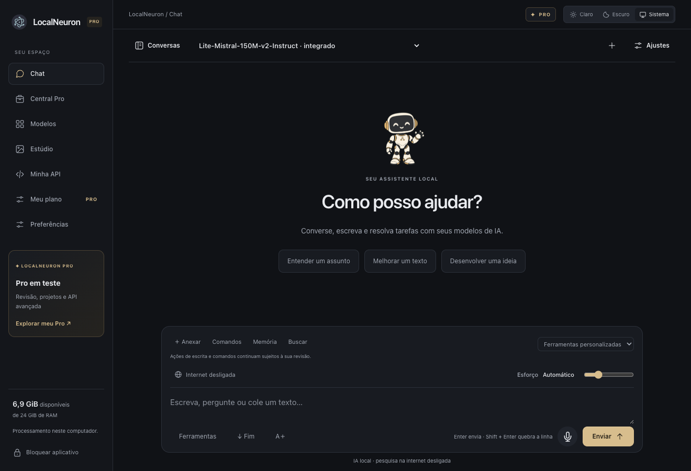

IA LOCAL · PRIVADA · SEM CONTA
Sua IA.
No seu computador.
Converse, programe e crie imagens, vídeos e músicas com modelos que rodam na sua máquina. Motores próprios, sem conta e, depois de instalados, sem internet.
macOS Apple Silicon · Windows · Linux / Alfa 0.28.1
LOCALNEURON / 01INTELIGÊNCIA PESSOAL

POR QUE LOCALNEURON
Um espaço de IA
que é todo seu.
A configuração guiada confere a RAM e o disco do seu computador, recomenda modelos compatíveis e monta sua equipe de bots pessoais e profissionais.
01 /Privado e offline.
Escolha entre Qwen, DeepSeek, Gemma e outras famílias, vendo RAM estimada, tamanho e licença antes de baixar. Depois de instalados, os modelos rodam com llama.cpp ou MLX, e suas conversas ficam no seu computador.
QwenDeepSeekGemmagpt-oss
02 /Crie além do texto.
Gere imagens e vídeos com stable-diffusion.cpp, músicas com ACE-Step e transcreva sua voz com Whisper, tudo localmente. No Editor, a IA propõe cortes para o DaVinci Resolve Studio, e você revisa antes de aplicar.
IMAGEM / VÍDEO / MÚSICA / VOZ
03 /Conecte do seu jeito.
Sirva seu modelo a outros apps pela Minha API, compatível com OpenAI Chat Completions, com uma chave por cliente. Conecte ferramentas MCP com permissões por bot. Divida um modelo entre Macs com a rede EXO.
MINHA API / MCP / EXO
COMEÇAR EM 3 PASSOS
Do download
à primeira conversa.
Você precisa de internet para baixar o app e os modelos. Depois disso, os motores compatíveis funcionam offline.
01 /Baixe e instale.
Escolha seu sistema abaixo. No Mac, arraste para Aplicativos. No Windows, execute o instalador Setup. No Linux, use o AppImage, o DEB ou o pacote Arch.
02 /Siga a configuração guiada.
Proteja seu espaço, informe seu perfil e veja quais modelos cabem na RAM e no disco do seu computador.
03 /Baixe um modelo e converse.
Comece com um modelo de texto pequeno em Q4. Abra o Chat e use Usar offline para desligar internet e terminal.
PRONTO PARA COMEÇAR?
Sua próxima IA
começa aqui.
Escolha seu sistema. Os modelos são baixados separadamente dentro do aplicativo.
LOCALNEURON 0.28.1 / ALFA
Versão alfa em desenvolvimento. A velocidade e os modelos disponíveis dependem do hardware. Os pacotes ainda não têm assinatura de distribuição; seu sistema pode exibir um aviso ao abrir.
CENTRAL DE INFORMAÇÕES · 0.28.1
Configure uma vez.
Crie do seu jeito.
Instalação, modelos, estúdios, bots, API e rede EXO. Um guia direto para entender cada parte do seu espaço de IA.
PERGUNTAS FREQUENTES
Antes de baixar.
Preciso de internet?
Para baixar o app, os modelos e os motores, sim. Depois disso, os motores compatíveis rodam offline. Pesquisa web, MCP e APIs externas só usam a rede quando você liga essas opções.
É grátis?
Baixar e rodar modelos locais compatíveis não exige pagamento nem conta em provedor de IA. O plano Pro é opcional e a cobrança ainda não está ativada.
Meu computador aguenta?
O app roda em macOS Apple Silicon, Windows x64 e Linux x64. Mac Intel não é atendido. A velocidade depende do modelo e do hardware: a biblioteca mostra a RAM estimada, mas ela não substitui um teste real. Comece por um modelo pequeno.
Preciso do LM Studio?
Não. O LocalNeuron tem motores próprios. Se você já usa o LM Studio, os GGUFs da pasta dele são reutilizados sem copiar os pesos. Veja a comparação.
Meus dados ficam no meu computador?
Conversas e arquivos ficam no espaço local. A senha cifra os segredos do cofre, não todas as conversas. Este site não recebe suas configurações privadas.
Por que meu sistema mostra um aviso ao abrir?
Os pacotes da alfa ainda não têm assinatura de distribuição; no Mac, a assinatura é ad hoc, sem notarização Apple. Confira a origem e o SHA-256 em cada download.
Em que idioma está o aplicativo?
A interface do aplicativo está em português. Este site está em 7 idiomas; a documentação detalhada está em português.
O futuro da IA também cabe no seu computador.
↗